I am a Ph.D. candidate in the UCLA Physics & Astronomy Department, working with Prof. Smadar Naoz. My research focuses on the generation, propagation, and detection of gravitational waves (GWs) from various astrophysical environments, including eccentric compact object binaries, hierarchical triple systems, and AGN disks. I am also interested in other areas of physics, such as dark matter, quantum gravity, and cosmology. I received my B.S. in physics from Peking University in 2021 and my M.S. in physics from UCLA in 2022.
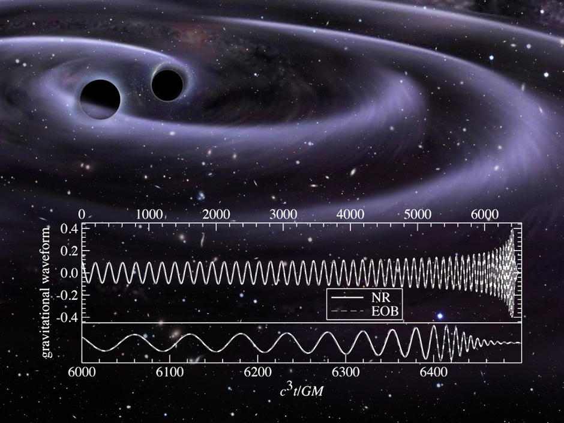
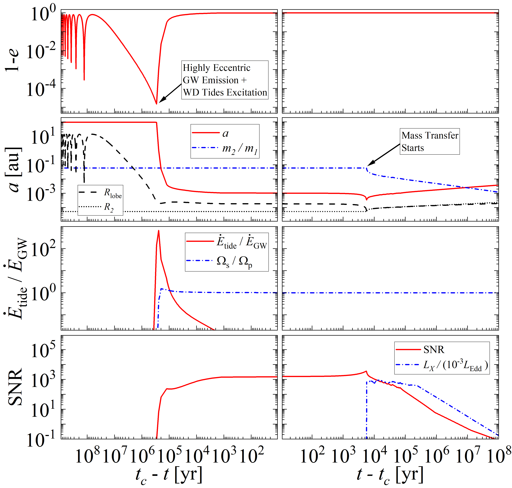
Ultracompact X-ray binaries (UCXBs) are a subclass of low-mass X-ray binaries characterized by tight orbits and degenerate donors, which pose significant challenges to our understanding of their formation. In this letter, we show that wide BH-WD systems can naturally form UCXBs through the eccentric Kozai-Lidov (EKL) mechanism. We further predict that the wide triple channel can produce 5-45 detectable UCXBs in the Milky Way, including around 1 system observable by the mHz GW detection of LISA. Notably, the identification of tertiary companions in observed UCXBs would provide direct evidence for this formation pathway and yield unique insights into their dynamical origins.
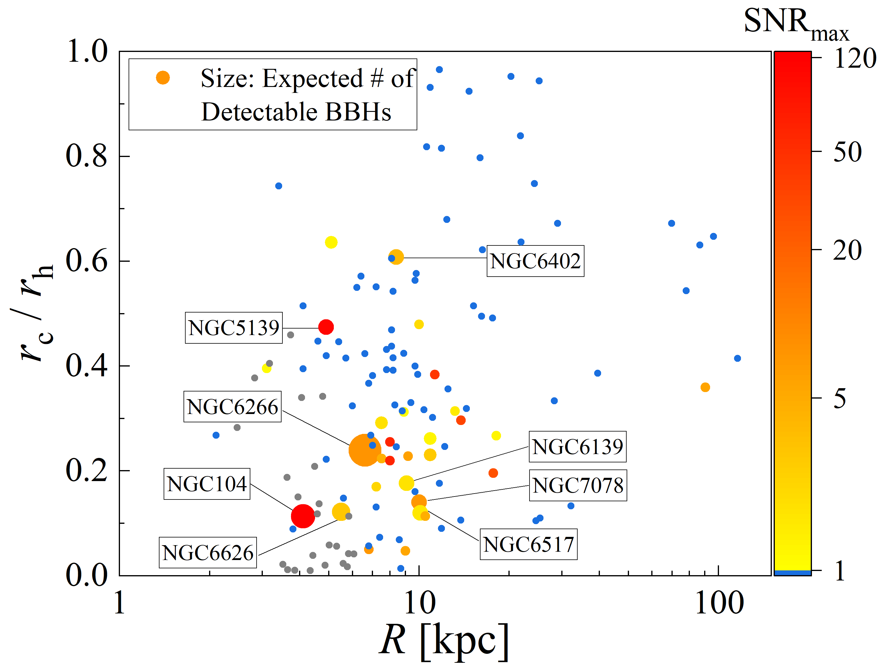
The dynamical formation of binary black holes (BBHs) in globular clusters (GCs) is expected to contribute significantly to the observed GW merger rate. In this work, we use Monte Carlo N-body simulations to construct a realistic sample of Galactic clusters. The result shows that LISA will detect a handful of dynamically-formed BBHs in Milky Way GCs, with approximately 50% exhibiting high eccentricities (e > 0.9). These systems typically feature highly-resolved orbital frequencies and eccentricities, along with precise total mass and sky-location meausurement (~10–100 arcminutes). The detection and localization of even a single BBH in a Galactic GC would allow accurate tracking of its long-term orbital evolution, enable a direct test of the role of GCs in BBH formation, and provide a unique probe into the evolutionary history of Galactic clusters.
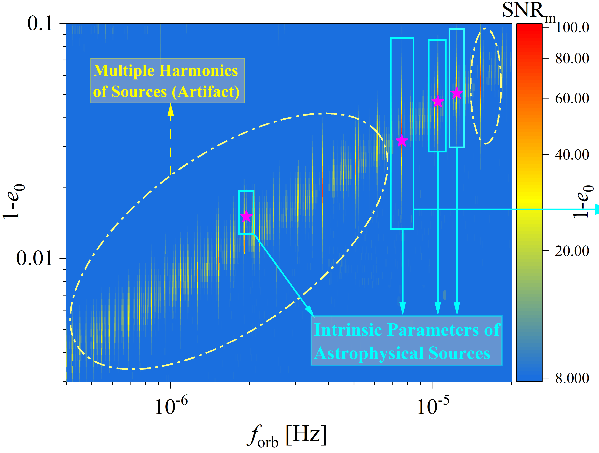
Wide, highly eccentric (e > 0.9) compact binaries can naturally arise as progenitors of gravitational wave mergers. In this study, we show that the detection of mHz GW signals from highly eccentric stellar mass binaries in the local universe can strongly constrain their orbital parameters. Specifically, it can achieve a relative measurement error of ~1e-6 for orbital frequency and ~1% for eccentricity (as 1-e) in most of the detectable cases. We also perform mock LISA data analysis to evaluate the realistic detectability of highly eccentric compact binaries.
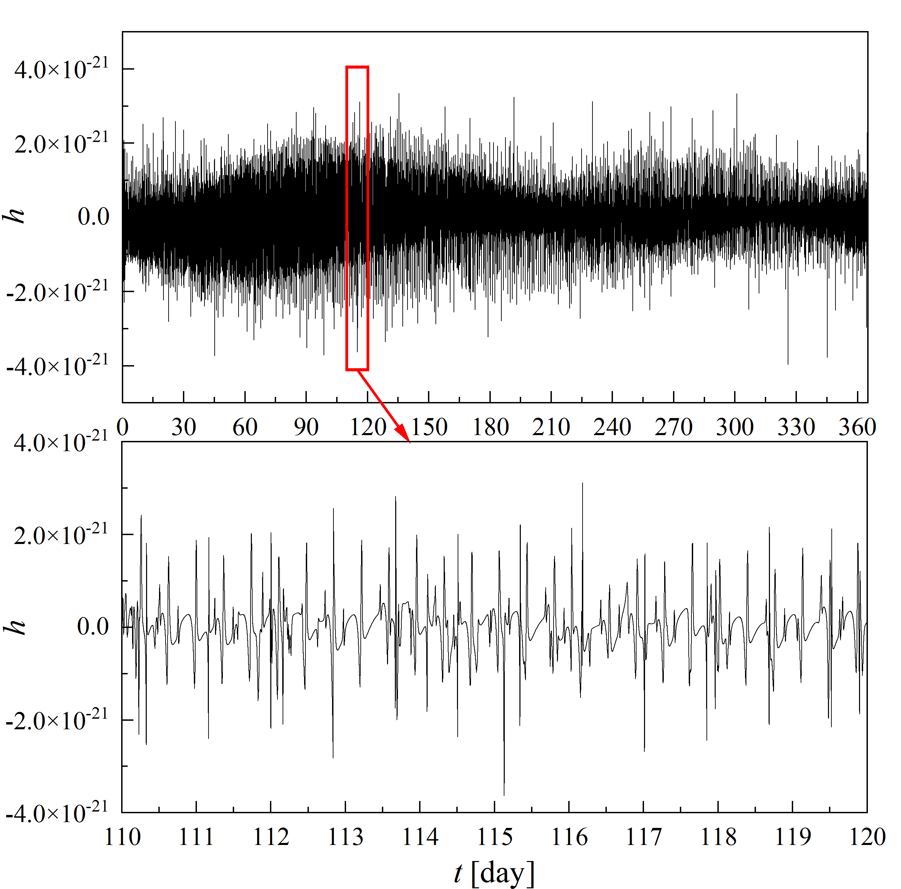
(Zeyuan Xuan, Smadar Naoz, Bence Kocsis, and Erez Michaely, PhRvD, 2024)
Dynamical interactions can bring a binary with large initial orbital separation into a close pericenter passage, leading to efficient GW emission and a final merger. As a progenitor stage of these mergers, highly eccentric compact object binaries may commonly exist in our Universe. In this work, we examine the stochastic GW background (GWB) from highly eccentric, stellar-mass sources in the mHz band. Our findings suggest that these binaries can contribute a substantial GW power spectrum, potentially exceeding the LISA instrumental noise at 3~7 mHz.
For eccentric compact object binaries with large orbital seperation, their GW emission happens mostly near the pericenter passage, creating a unique, burst-like signature in the waveform. Based on our estimation, there will be 3-45 bursting binary black holes in the Milky Way, with hundreds to thousands of GW bursts detected during the LISA mission.
Using the general relativistic precession pattern in the GW signal, we can enhance the measurement accuracy of GW sources' peculiar acceleration by a factor of ~100, providing that the binary has moderate eccentricity. This finding can help us identify the GW sources' acceleration in the milli-hertz gravitational wave band, even if they are as far as 1pc away from a supermassive black hole in the galactic center. With the improved acceleration measurement, we can better understand where these GW sources live and how they formed.
The GW signal from Double White Dwarfs (DWDs) in hierarchical triple systems can be distorted. We may misidentify them as other kinds of GW sources, such as binary black holes, binary neutron stars, or even primordial black holes. Because of the large population of DWDs in the milli-hertz GW band, we need to pay attention to this problem and avoid misleading interpretations in future space gravitational wave detections, such as LISA.
Binary black holes can live in a gaseous environment (for example, AGN disks), which makes their orbital evolution quite different from other GW sources in the vacuum. Our numerical simulation shows the role of gas in the evolution of these GW sources, as well as how long it will take us to distinguish the effect of the gas.
11. Zeyuan Xuan, Smadar Naoz, Kyle Kremer, Michael L. Katz, Bence Kocsis, and Erez Michaely. Eccentric Stellar-mass Binary Black Holes: Population, Detectability, and Waveform Analysis in the LISA and LIGO Era. arXiv:2605.15265 (2026)
10. Zeyuan Xuan, Cheyanne Shariat, Smadar Naoz. From Wide Triples to UCXBs: Multimessenger Detection of Dynamically-formed Black Hole-White Dwarf Systems with LISA, The Astrophysical Journal. (2025)
9. Zeyuan Xuan, Kyle Kremer and Smadar Naoz. Localizing Dynamically-Formed Black Hole Binaries in Milky Way Globular Clusters with LISA, The Astrophysical Journal Letters. (2025)
8. Zeyuan Xuan, Smadar Naoz, Alvin K. Y. Li, Bence Kocsis, Erik Petigura, Alan M. Knee, Jess McIver, Kyle Kremer, Will M. Farr. Extracting Astrophysical Information of Highly-Eccentric Binaries in the Millihertz Gravitational Wave Band, Physical Review D. (2025)
7. Zeyuan Xuan, Smadar Naoz, Bence Kocsis and Erez Michaely. Stochastic Gravitational Wave Background from Highly-Eccentric Stellar-Mass Binaries in the Milli-hertz Band, Physical Review D. (2024)
6. Zeyuan Xuan, Smadar Naoz, Bence Kocsis and Erez Michaely. Detecting Gravitational Wave Bursts From Stellar-Mass Binaries in the Milli-hertz Band, The Astrophysical Journal. (2024)
5. Zeyuan Xuan, Smadar Naoz and Xian Chen. Detecting Accelerating Eccentric Binaries in the LISA Band, Physical Review D. (2023)
4. Zeyuan Xuan, Peng Peng and Xian Chen. Degeneracy between mass and peculiar acceleration for the double white dwarfs in the LISA band, Monthly Notices of the Royal Astronomical Society.(2021)
3. Chen, Xian; Xuan, Ze-Yuan; Peng, Peng. Fake Massive Black Holes in the Milli-Hertz Gravitational-wave Band, The Astrophysical Journal.(2020)
2. Charlie Sharpe, Yonadav Barry Ginat, Zeyuan Xuan, and Bence Kocsis. Resonant Locking Between Binary Systems Induced by Gravitational Waves. arXiv:2502.01733 [gr-qc] (2025)
1. Torres-Orjuela, Alejandro; Amaro Seoane, Pau; Xuan, Zeyuan; Chua, Alvin J. K.; Rosell, Mara J. B.; Chen, Xian. Exciting modes due to the aberration of gravitational waves: Measurability for extreme-mass-ratio inspirals, Physical Review Letters.(2020)
I love traveling with friends and exploring new places. The first photo on this page was taken at the summit of Mauna Kea, Hawaii, under an endless starry sky, with lava glowing behind the clouds. The beauty of nature, and the variety of ways people live, always fascinates me.
Life is good, and the universe is worth thinking about :)
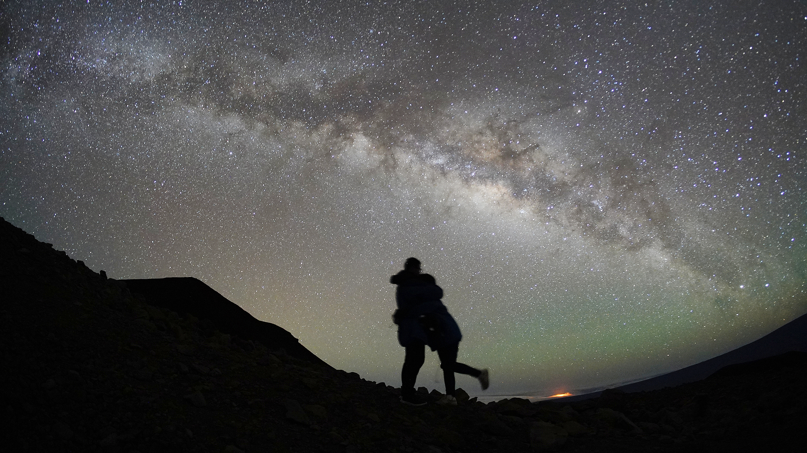
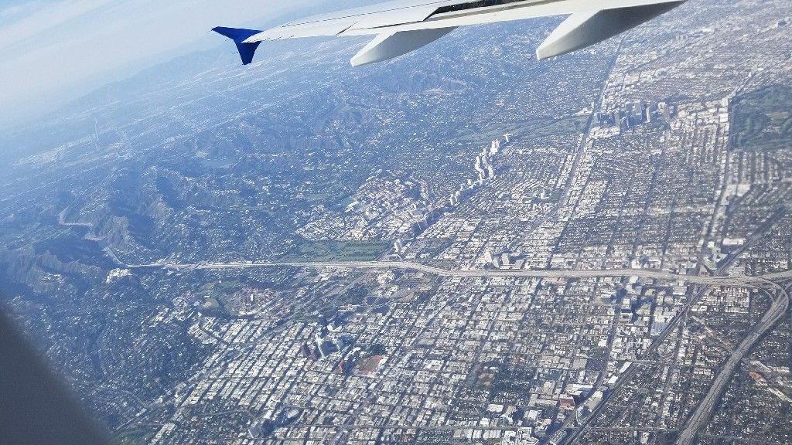
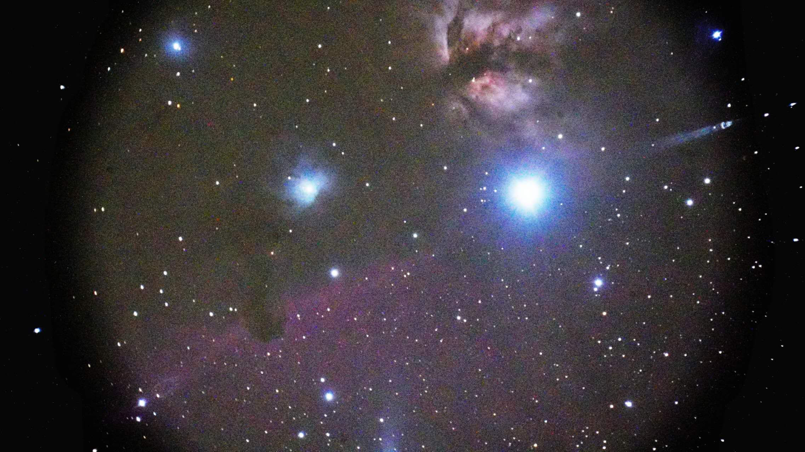
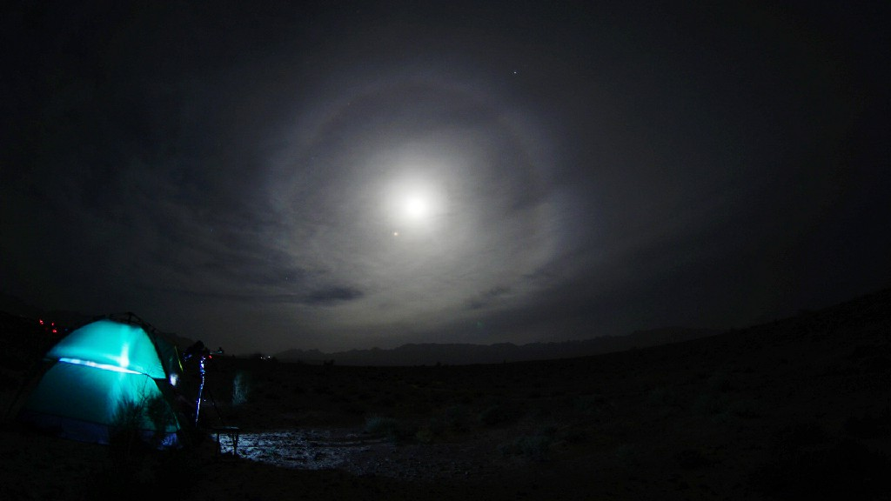
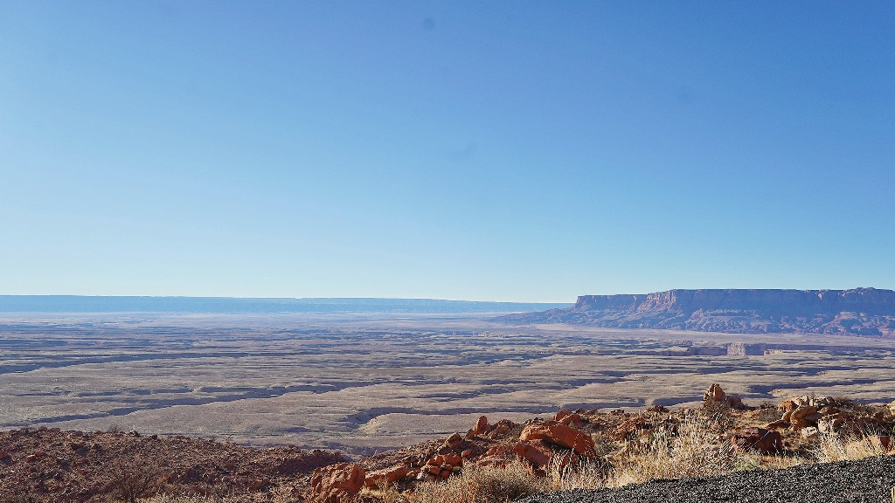
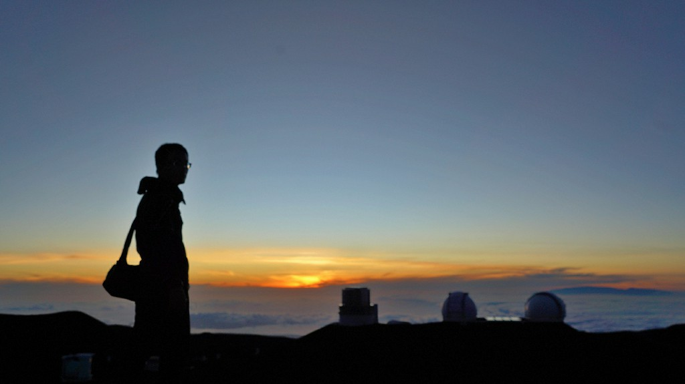
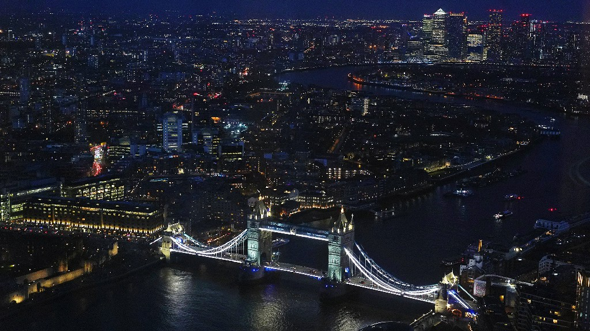
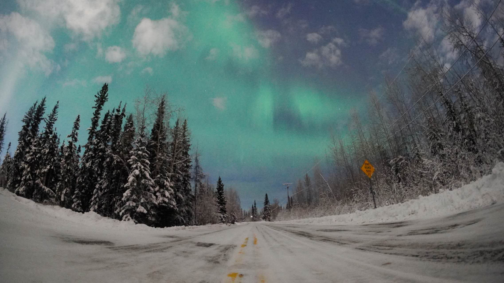
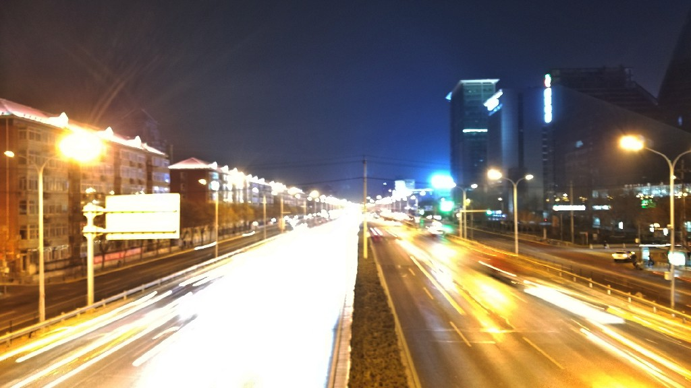
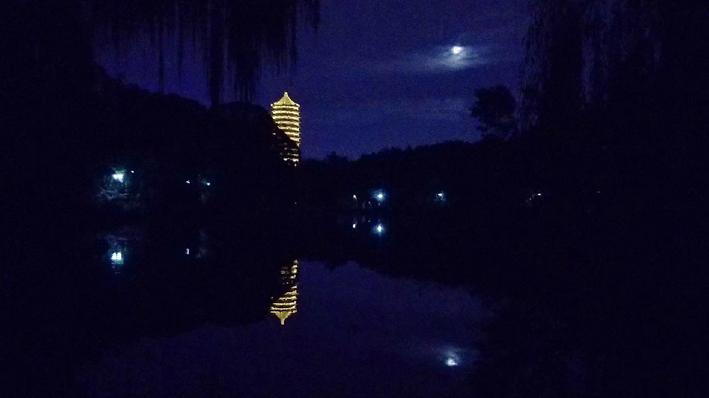